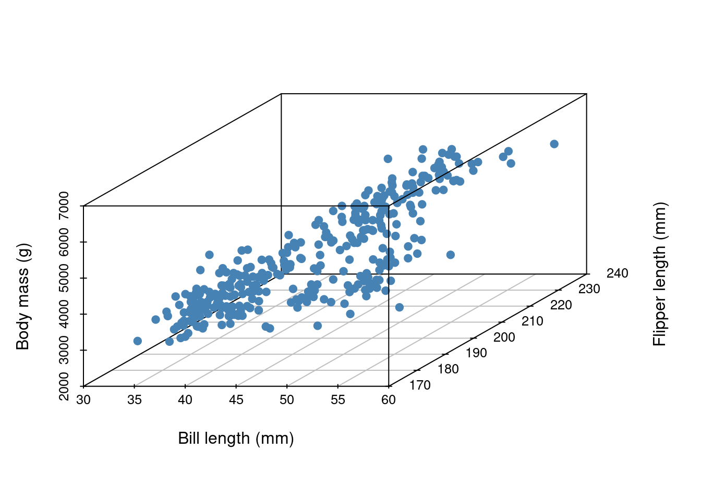
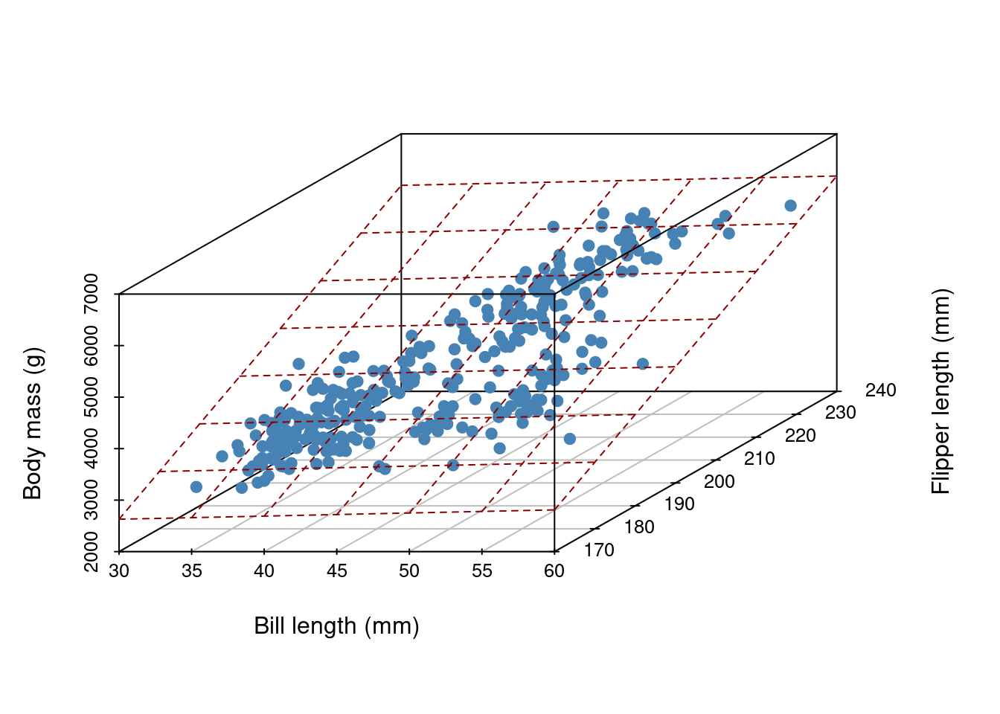

library(tidyverse)
library(tidymodels)
library(scatterplot3d)Intro to regression
Background review
Linear modeling and linear regression

- Linear regression is but a special case of modeling the conditional expectation of one variable \(Y\) given other variables \(X\) where \(E[Y|X] = X \beta\). This is what we will focus on today.
- A generalized linear model states \(E[Y|X] = g(X\beta)\), for some invertible “link” function \(g\).
- Least squares regression (otherwise termed “ordinary least squares” or “OLS”) refers to a particular method of estimating \(\beta\): minimize the sum of squared residuals.
Notation
- \(\mathbf{y} = \{y_1, \ldots y_n\}\) is an \(n \times 1\) vector outcomes. Also called the “response” or “dependent variable”. \(y_i\) is an individual observed outcome.
- \(\mathbf{x}_i\) is a \(p \times 1\) vector of predictors also called “regressors”, “independent variables”, “covariates”, or “features”.
- \(X\) is a \(n \times p\) matrix of all covariates. This is often referred to as “the data matrix”.
- \(\beta\) is a \(p \times 1\) vector of constants. These are referred to as parameters. These are fixed, but unknown numbers. Being Bayesian, we will describe our uncertainty about this population parameter vector using probability statements.
Common convention
The linear model
\[ E[Y | X\beta] = X \beta \] often has the hidden convention that the first column of \(X\) is all 1s and \(\beta_1\) is understood to be the intercept term. E.g.
\[ E [ Y | X ] = \begin{bmatrix} 1 & x_{12} & \ldots & x_{1p} \\ 1 & x_{22} & \ldots & x_{2p} \\ \vdots & \vdots & & \vdots\\ 1 & x_{n2} & \ldots & x_{np} \end{bmatrix} \begin{bmatrix} \beta_1\\ \beta_2\\ \vdots\\ \beta_p \end{bmatrix} \]
Illustration of a linear model
Example
Imagine we’ve collected 3 measurements on a number of penguins:
- body mass (g)
- bill length (mm)
- flipper length (mm)
The first five entries of our data set are given below:
# A tibble: 5 × 3
body_mass_g bill_length_mm flipper_length_mm
<int> <dbl> <int>
1 3750 39.1 181
2 3800 39.5 186
3 3250 40.3 195
4 3450 36.7 193
5 3650 39.3 190In all, our data set contains the measurements of 342 penguins. Because we’ve collected three measurements, each individual penguin can be represented as a point in three dimensional space:

Now, imagine it’s hard to measure a penguin’s bodymass because it’s difficult to get them onto a scale. We wish to develop a linear model that uses bill length and flipper length to predict body mass,
\[ E[Y|X] = X \beta, \]
where
- \(Y\) is the body mass of the penguins and
- \(X\) contains covariates bill length and flipper length.
What does our linear model look like?

In general, for \(D\) measurements, a linear model is a \(D-1\) dimensional hyperplane!
Traditional way to find the hyperplane
To “fit” a linear regression model means to estimate \(\beta\). One way to do this is to minimize some objective function. A really common function to minimize is the sum of square residuals SSR.
A residual is defined as the distance our mean is from the true value:
\[ \begin{aligned} r_i &= y_i - E[y_i | \mathbf{x}\beta]\\ &= y_i - \beta^T\mathbf{x}_i \end{aligned} \] Thus the sum of square residuals is:
\[ \begin{aligned} \sum_{i=1}^n r_i^2 &= \sum_{i=1}^n (y_i - \beta^T \mathbf{x}_i)^2\\ &= (\mathbf{y} -X\beta)^T(\mathbf{y} -X\beta)\\ &= \mathbf{y}^T \mathbf{y} - 2\beta^T X^T\mathbf{y} + \beta^TX^TX\beta) \end{aligned} \]
The ordinary least squares (OLS) estimate is
\[ \hat{\beta}_{OLS} = (X^TX)^{-1}X^T \mathbf{y} \] - See the matrix cookbook by Petersen and Petersen for all your matrix algebra needs.
What other objective functions could we optimize?
Show that \(\hat{\beta}_{OLS}\) is un-biased. In other words, show that \(E[\hat{\beta}_{OLS} | \beta] = \beta\).
Normal linear regression model
So far, we had not made any distributional assumptions, we only made an assumption about the expectation. Now for the normal linear regression model,
\[ Y = X \beta + \epsilon \]
and \(\epsilon \sim N(0, \sigma^2 I)\) where \(I\) is a \(n \times n\) identity matrix. This is a way of saying \(\epsilon_i \sim_{iid} N(0, \sigma^2)\).
Therefore,
\[ \mathbf{y} | X, \beta, \sigma^2 \sim MVN(X\beta, \sigma^2 I) \]
Show that \(Var(\hat{\beta}_{OLS} | \beta, \sigma^2) = \sigma^2(X^TX)^{-1}\) under the normal model above.
Hint
Let \(z\) be a random vector. \(Var[Az] = A Var(z) A^T\).
What is \(\hat{\beta}_{MLE}\)?
Assumptions
A brief reminder about the flexibility and limitations of classical linear regression.
Limitations so far:
the mean may not be a good summary of the conditional relationship, e.g. if \(p(y|x)\) is skewed, multimodal, or has heavy tails.
error may not be iid. In other words, the conditional variance of \(Y\) may change with the \(\mathbf{x}\)s.
Flexibility
Is this an example of linear regression?
\[ y_i = \beta_1 + \beta_2x_1 + \beta_3 x_1^2 + \beta_4 \log x_1 + \beta_5 x_2 + \beta_6 x_1 x_2 + \epsilon_i \] What’s linear about linear regression? The parameters!
This is powerful, because nonlinear relationships between \(X\) and \(\mathbf{y}\) can often be corrected by a power transformation of \(X\), \(\mathbf{y}\) or of both variables.
Bayesian regression
Let’s assume the normal sampling model (i.e. normal data generative process, aka normal likelihood),
\[ \mathbf{y} | X, \beta, \sigma^2 \sim MVN(X\beta, \sigma^2I). \] To make inference about our model parameters, we will construct a posterior distribution,
\[ p(\beta, \sigma^2 | \mathbf{y}, X) \propto \underbrace{ p(\mathbf{y}|X, \beta, \sigma^2)}_{likelihood} \underbrace{p(\beta, \sigma^2)}_{prior} \]
semi-conjugate prior specification
To setup Gibbs sampling, let’s consider independent semi-conjugate priors, i.e. assume \(p(\beta, \sigma^2) = p(\beta) p(\sigma^2)\)
Before reading ahead, what do you think semi-conjugate priors will be for the parameters under the normal linear regression model?
semi-conjuate prior on \(\beta\)
If \[ \beta \sim MVN(\beta_0, \Sigma_0) \]
then
\[ \begin{aligned} p(\beta|\mathbf{y}, X, \sigma^2) &\propto p( \mathbf{y} | X, \beta, \sigma^2) p(\beta)\\ &\propto MVN(\mathbf{m}, V) \end{aligned} \]
where
\[ \begin{aligned} V = Var[\beta | \mathbf{y}, X, \sigma^2] &= (\Sigma_0^{-1} + X^TX / \sigma^2)^{-1}\\ \mathbf{m} = E[\beta | \mathbf{y}, X, \sigma^2] &= (\Sigma_0^{-1} + X^T X/ \sigma^2)^{-1}(\Sigma_0^{-1} \beta_0 + X^T\mathbf{y} / \sigma^2) \end{aligned} \]
semi-conjugate prior on \(\sigma^2\)
Let’s re-parameterize. Let \(\gamma = 1/\sigma^2\).
If \[ \gamma \sim \text{gamma}(\nu_0 /2, \nu_0 \sigma_0^2 / 2) \]
then
\[ \begin{aligned} p(\gamma | \mathbf{y}, X, \beta) &\propto p( \mathbf{y} | X, \beta, \sigma^2) p(\gamma)\\ &\propto \text{gamma}([\nu_0 + n]/2, [\nu_0 \sigma_0^2 + SSR(\beta)]/2) \end{aligned} \]
Write out the pseudo-code of a Gibbs sampler that samples from \(p(\beta, \sigma^2| \mathbf{y}, X)\).